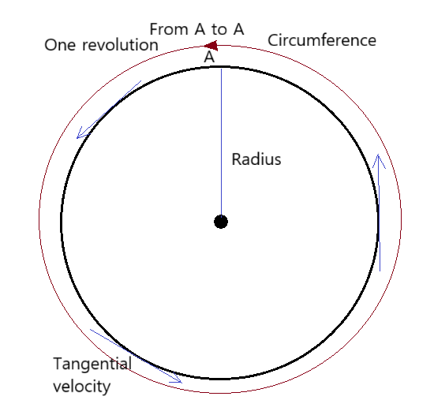

Section 6.1: Introduction to Circular Motion
Circular motion occurs when an object moves along a circular path, keeping a constant distance from the center. It is found in wheels, satellites, and planetary motion.
Key Concept: Even if speed is constant, the object is accelerating because the direction of velocity changes continuously toward the center (centripetal acceleration).
Circular Motion Diagram
Uniform vs Non-uniform Circular Motion
- Uniform: Constant speed. Direction changes → centripetal acceleration.
- Non-uniform: Speed changes. Has both centripetal and tangential acceleration.
Important Quantities in Circular Motion
Radius (r)
The distance from the center of the circle to the object. A larger radius reduces centripetal acceleration for the same speed.
Circumference (C)
The total distance around the circle. Formula: \( C = 2\pi r \).
Period (T)
The time for one complete revolution, measured in seconds.
Frequency (f)
The number of revolutions per second, \( f = 1/T \) (Hertz).
Velocity (v)
The speed along the circular path, \( v = 2\pi r / T = 2\pi r f \).
Centripetal Acceleration (ac)
Acceleration directed toward the center, \( a_c = v^2 / r \).
Centripetal Force (Fc)
The net force toward the center keeping the object in circular motion, \( F_c = m v^2 / r \).
Facts and Real-world Examples
- Larger radius → smaller centripetal acceleration for same speed.
- Higher speed → larger centripetal force.
- Uniform circular motion: car on circular track at constant speed, satellite in orbit.
- Non-uniform circular motion: rollercoaster cars accelerating and decelerating.